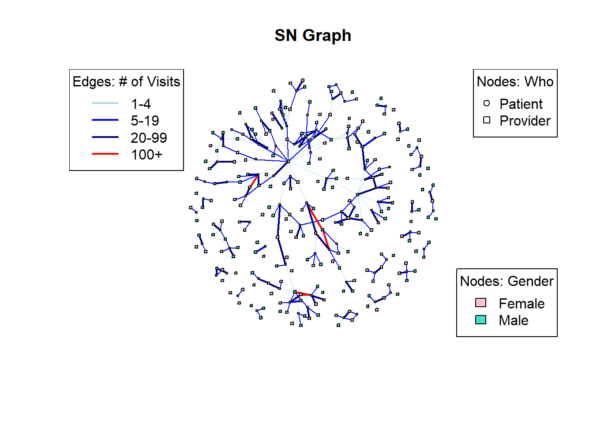

library(tidyverse)
library(readr)
library(igraph)
library(sna)
library(statnet)
library(ggplot2)
library(patchwork)Research Question
Does the demographic profile, including factors such as marital status, gender, and income, significantly impact the utilization of healthcare services among people who use drugs (PWUD), and does it influence the structure and strength of social network connections between PWUD and healthcare providers?
Hypothesis
Demographic Disparities in Healthcare Utilization: PWUD from marginalized demographics, such as lower-income groups or minority populations, may have reduced access to healthcare services compared to PWUD from more privileged demographics.
Gender Differences in Healthcare Utilization: Gender may influence the type and frequency of healthcare services utilized by PWUD, with potential differences between male and female PWUD in accessing preventive care, substance abuse treatment, or mental health services. Additionally, the gender of providers may impact the type and frequency of healthcare service utilization among PWUD, with preferences or comfort levels potentially differing between male and female PWUD in seeking care from providers of the same or opposite gender.
Marital status may not only affect the size of social networks but also the type and frequency available within these networks, influencing healthcare-seeking behavior among PWUD.
Geographic Accessibility and Healthcare Utilization: Demographic factors may interact with geographic location, with PWUD in rural or underserved areas facing distinct challenges in accessing healthcare services compared to those in urban or well-served regions.
Healthcare Service Utilization as a Proxy for Overdose Risk: The utilization of a greater number of healthcare services among PWUD may serve as an indicator of increased risk of experiencing an overdose. This hypothesis suggests that PWUD who engage more frequently with healthcare services may be more likely to have experienced or be at higher risk of experiencing an overdose event, potentially due to underlying health issues, higher substance use severity, or other related factors.
Data Collection
Data for this project were taken from Synthetic Mass, which creates Synthetic patient data from Synthea.
Criteria for patient download will be set to include patients that have experienced overdose, substance use treatment, and have other indicators in their health records that could be considered substance use.
While a whole host of datasets are available within each download, I will focus this project on three datasets: patients.csv, providers.csv, and encounters.csv.
Patients and Providers will be the actors analyzed. The patient and provider datasets contain information on the person level details, with names and some demographic information, with more detail available for patients than providers.
Encounters will be the relationships analyzed. Encounters are appointments, visits, and clinical encounters and include notes on the visit including the date, reason, and cost breakdown.
- Reminder: none of this data is real, it is synthetic, so the personally identifiable information I share is not data on real people and cannot be used to identify real people.
Data Cleaning
Data for this project will be read in, reduced to only necessary data, cleaned (trim ws, recode variables, match across datasets, and other data cleaning processes)
Data Analysis
Analysis will primarily be of a two-mode network, developing an analysis of the patient-provider relationship. Weights will be assigned to the number of visits between patients and providers. Block Modeling analysis will be performed in one-mode networks of patient or providers to understand the structure of the networks. Blocks will be assigned to patients and providers as an attribute for analysis.
Cleaning
This post will primarily focus on data cleaning and data exploration with some exploration into social network analysis through transforming the data into an incidence matrix and plotting some attributes.
Read in Patient, Provider, and Encounter Data
PATIENT DATA
The following table is the data available in the patient dataset.
patients <- read_csv("synthea_sample_data_csv_latest/patients.csv")Rows: 86 Columns: 27
── Column specification ────────────────────────────────────────────────────────
Delimiter: ","
chr (19): Id, SSN, DRIVERS, PASSPORT, PREFIX, FIRST, LAST, SUFFIX, MAIDEN, ...
dbl (6): FIPS, LAT, LON, HEALTHCARE_EXPENSES, HEALTHCARE_COVERAGE, INCOME
date (2): BIRTHDATE, DEATHDATE
ℹ Use `spec()` to retrieve the full column specification for this data.
ℹ Specify the column types or set `show_col_types = FALSE` to quiet this message.head(patients)# A tibble: 6 × 27
Id BIRTHDATE DEATHDATE SSN DRIVERS PASSPORT PREFIX FIRST LAST SUFFIX
<chr> <date> <date> <chr> <chr> <chr> <chr> <chr> <chr> <chr>
1 fd7d27… 1986-07-11 NA 999-5… S99942… X400041… Mrs. Anni… Glea… <NA>
2 cb36b3… 1958-12-12 NA 999-7… S99991… X680941… Mrs. Juli… Barr… <NA>
3 757603… 1977-08-09 NA 999-7… S99974… X378787… Mrs. Ales… Hean… <NA>
4 a970cc… 1997-07-04 NA 999-8… S99937… X401363… Ms. Sand… Rice… <NA>
5 298741… 1979-05-05 NA 999-2… S99988… X201473… Mrs. Mia3… Runt… <NA>
6 0863bd… 1997-11-12 NA 999-8… S99962… X675884… Mr. Dami… Dach… <NA>
# ℹ 17 more variables: MAIDEN <chr>, MARITAL <chr>, RACE <chr>,
# ETHNICITY <chr>, GENDER <chr>, BIRTHPLACE <chr>, ADDRESS <chr>, CITY <chr>,
# STATE <chr>, COUNTY <chr>, FIPS <dbl>, ZIP <chr>, LAT <dbl>, LON <dbl>,
# HEALTHCARE_EXPENSES <dbl>, HEALTHCARE_COVERAGE <dbl>, INCOME <dbl>str(patients)spc_tbl_ [86 × 27] (S3: spec_tbl_df/tbl_df/tbl/data.frame)
$ Id : chr [1:86] "fd7d2777-0aa7-4495-7355-7d57087f73b1" "cb36b365-bfa5-aa61-3240-ed97d2c7b7fa" "75760354-5f22-c391-cb3a-f7523b73277d" "a970cca2-8c88-a67a-8675-00aa26069356" ...
$ BIRTHDATE : Date[1:86], format: "1986-07-11" "1958-12-12" ...
$ DEATHDATE : Date[1:86], format: NA NA ...
$ SSN : chr [1:86] "999-54-2711" "999-75-6253" "999-70-3855" "999-86-9249" ...
$ DRIVERS : chr [1:86] "S99942559" "S99991886" "S99974938" "S99937640" ...
$ PASSPORT : chr [1:86] "X40004111X" "X68094169X" "X37878770X" "X40136308X" ...
$ PREFIX : chr [1:86] "Mrs." "Mrs." "Mrs." "Ms." ...
$ FIRST : chr [1:86] "Annice210" "Julianne852" "Alesha810" "Sandee884" ...
$ LAST : chr [1:86] "Gleason633" "Barrows492" "Heaney114" "Rice937" ...
$ SUFFIX : chr [1:86] NA NA NA NA ...
$ MAIDEN : chr [1:86] "Koss676" "Jacobs452" "Labadie908" NA ...
$ MARITAL : chr [1:86] "M" "W" "D" NA ...
$ RACE : chr [1:86] "white" "white" "white" "white" ...
$ ETHNICITY : chr [1:86] "nonhispanic" "nonhispanic" "nonhispanic" "nonhispanic" ...
$ GENDER : chr [1:86] "F" "F" "F" "F" ...
$ BIRTHPLACE : chr [1:86] "Wrentham Massachusetts US" "Yarmouth Port Massachusetts US" "East Harwich Massachusetts US" "Springfield Massachusetts US" ...
$ ADDRESS : chr [1:86] "288 Steuber Landing Suite 38" "782 Lynch Dale" "415 Emmerich Trail" "726 Harvey Throughway" ...
$ CITY : chr [1:86] "Brookline" "Hamilton" "Framingham" "Taunton" ...
$ STATE : chr [1:86] "Massachusetts" "Massachusetts" "Massachusetts" "Massachusetts" ...
$ COUNTY : chr [1:86] "Norfolk County" "Essex County" "Middlesex County" "Bristol County" ...
$ FIPS : num [1:86] 25021 NA 25017 25005 NA ...
$ ZIP : chr [1:86] "02446" "00000" "01701" "02767" ...
$ LAT : num [1:86] 42.4 42.6 42.2 41.9 42.6 ...
$ LON : num [1:86] -71.1 -70.8 -71.5 -71.1 -71.4 ...
$ HEALTHCARE_EXPENSES: num [1:86] 13891 1027127 1021095 80365 577671 ...
$ HEALTHCARE_COVERAGE: num [1:86] 550582 224662 180027 159483 691055 ...
$ INCOME : num [1:86] 1565 39537 114339 96256 71238 ...
- attr(*, "spec")=
.. cols(
.. Id = col_character(),
.. BIRTHDATE = col_date(format = ""),
.. DEATHDATE = col_date(format = ""),
.. SSN = col_character(),
.. DRIVERS = col_character(),
.. PASSPORT = col_character(),
.. PREFIX = col_character(),
.. FIRST = col_character(),
.. LAST = col_character(),
.. SUFFIX = col_character(),
.. MAIDEN = col_character(),
.. MARITAL = col_character(),
.. RACE = col_character(),
.. ETHNICITY = col_character(),
.. GENDER = col_character(),
.. BIRTHPLACE = col_character(),
.. ADDRESS = col_character(),
.. CITY = col_character(),
.. STATE = col_character(),
.. COUNTY = col_character(),
.. FIPS = col_double(),
.. ZIP = col_character(),
.. LAT = col_double(),
.. LON = col_double(),
.. HEALTHCARE_EXPENSES = col_double(),
.. HEALTHCARE_COVERAGE = col_double(),
.. INCOME = col_double()
.. )
- attr(*, "problems")=<externalptr> summary(patients) Id BIRTHDATE DEATHDATE
Length:86 Min. :1918-12-18 Min. :1980-02-04
Class :character 1st Qu.:1956-09-07 1st Qu.:1999-02-19
Mode :character Median :1973-07-22 Median :2007-02-09
Mean :1971-05-21 Mean :2005-05-07
3rd Qu.:1987-07-27 3rd Qu.:2016-01-04
Max. :2004-12-24 Max. :2021-09-26
NA's :73
SSN DRIVERS PASSPORT PREFIX
Length:86 Length:86 Length:86 Length:86
Class :character Class :character Class :character Class :character
Mode :character Mode :character Mode :character Mode :character
FIRST LAST SUFFIX MAIDEN
Length:86 Length:86 Length:86 Length:86
Class :character Class :character Class :character Class :character
Mode :character Mode :character Mode :character Mode :character
MARITAL RACE ETHNICITY GENDER
Length:86 Length:86 Length:86 Length:86
Class :character Class :character Class :character Class :character
Mode :character Mode :character Mode :character Mode :character
BIRTHPLACE ADDRESS CITY STATE
Length:86 Length:86 Length:86 Length:86
Class :character Class :character Class :character Class :character
Mode :character Mode :character Mode :character Mode :character
COUNTY FIPS ZIP LAT
Length:86 Min. :25001 Length:86 Min. :41.55
Class :character 1st Qu.:25009 Class :character 1st Qu.:41.95
Mode :character Median :25017 Mode :character Median :42.31
Mean :25015 Mean :42.21
3rd Qu.:25021 3rd Qu.:42.46
Max. :25027 Max. :42.82
NA's :21
LON HEALTHCARE_EXPENSES HEALTHCARE_COVERAGE INCOME
Min. :-73.09 Min. : 9291 Min. : 0 Min. : 1565
1st Qu.:-71.45 1st Qu.: 39582 1st Qu.: 65610 1st Qu.: 30205
Median :-71.14 Median : 108692 Median : 322025 Median : 69924
Mean :-71.27 Mean : 206222 Mean : 471978 Mean :161151
3rd Qu.:-70.97 3rd Qu.: 262415 3rd Qu.: 690279 3rd Qu.:128855
Max. :-70.17 Max. :1058955 Max. :1893513 Max. :840567
#create NAME column combining FIRST and LAST names
patients <- patients %>%
rename(PATIENT = Id) %>%
unite(NAME, FIRST, LAST, sep = " ")
#trim whitespace NAME
patients$NAME <- trimws(patients$NAME)
#trim whitespace COUNTY
patients$CITY <- trimws(patients$CITY)
#clean up GENDER, RACE, ETHNICITY, and INCOME sections
patients <- patients %>%
mutate(
GENDER = tolower(GENDER),
GENDER = case_when(
GENDER %in% c("male", "m", "man") ~ "Male",
GENDER %in% c("female", "f", "woman") ~ "Female",
TRUE ~ NA_character_ # assign NA to any non-standard values
),
# city (patient)
CITY =tolower(CITY),
# race (patient)
RACE = tolower(RACE), # convert race to lower case for consistency
# ethnicity (patient)
ETHNICITY = tolower(ETHNICITY), # convert ethnicity to lower case for consistency
# marital (patient)
MARITAL = ifelse(MARITAL == "M", "Married",
ifelse(MARITAL == "D", "Divorced",
ifelse(MARITAL == "W", "Widowed",
ifelse(MARITAL == "S", "Single", MARITAL)))),
# income (patient)
INCOME = as.numeric(INCOME) # convert income to numeric if necessary
) %>%
drop_na(GENDER, RACE) I am only keeping the demographic data below (gender, race, marital status, income, and age) which will be used as an attribute for each patient.
#Create AGE from BIRTHDATE
patients <- patients %>%
mutate(
BIRTHDATE = as.Date(BIRTHDATE), # Ensure 'dob' is in Date format
AGE = interval(BIRTHDATE, today()) / years(1) # Calculate age in years
) %>%
mutate(
AGE = floor(AGE) # complete years only, removing decimal
)
# Only keep patient name and demographics. This will be utilized as the attribute data for analysis.
pat_attr <- patients%>%
select(NAME, GENDER, RACE, MARITAL, CITY, INCOME, AGE)
head(pat_attr)# A tibble: 6 × 7
NAME GENDER RACE MARITAL CITY INCOME AGE
<chr> <chr> <chr> <chr> <chr> <dbl> <dbl>
1 Annice210 Gleason633 Female white Married brookline 1565 37
2 Julianne852 Barrows492 Female white Widowed hamilton 39537 65
3 Alesha810 Heaney114 Female white Divorced framingham 114339 46
4 Sandee884 Rice937 Female white <NA> taunton 96256 26
5 Mia349 Runte676 Female white Divorced chelmsford 71238 44
6 Damian46 Dach178 Male white <NA> swansea 74155 26pat_race <- ggplot(pat_attr,aes(RACE)) + geom_bar()
pat_gender <- ggplot(pat_attr,aes(GENDER)) + geom_bar()
pat_race + pat_gender + plot_annotation(title = "Patient Race and Gender Breakdown")ggplot(pat_attr,aes(MARITAL)) + geom_bar() + labs(title = "Patient Marital Status")
pat_income <- ggplot(pat_attr, aes(x = 1, y = INCOME)) +
geom_jitter(width = 0.2) +
labs(x = NULL, y = "Income") +
theme_minimal() + labs(title = "Patient Income")
summary(pat_attr$INCOME) Min. 1st Qu. Median Mean 3rd Qu. Max.
1565 30205 69924 161151 128855 840567 pat_age <- ggplot(pat_attr,aes(AGE)) + geom_bar()
ggplot(data = patients %>%
count(CITY) %>%
filter(n > 2), # Filter for counts higher than 10
aes(x = CITY, y = n)) +
geom_bar(stat = "identity") +
coord_flip() + labs(title = paste("Patients Cities", "\n*filtered to show >2 Patients per City"))PROVIDER DATA
The following table is the data available in the provider dataset.
providers <- read_csv("synthea_sample_data_csv_latest/providers.csv") %>%
rename(PROVIDER = Id)Rows: 815 Columns: 13
── Column specification ────────────────────────────────────────────────────────
Delimiter: ","
chr (9): Id, ORGANIZATION, NAME, GENDER, SPECIALITY, ADDRESS, CITY, STATE, ZIP
dbl (4): LAT, LON, ENCOUNTERS, PROCEDURES
ℹ Use `spec()` to retrieve the full column specification for this data.
ℹ Specify the column types or set `show_col_types = FALSE` to quiet this message.head(providers)# A tibble: 6 × 13
PROVIDER ORGANIZATION NAME GENDER SPECIALITY ADDRESS CITY STATE ZIP LAT
<chr> <chr> <chr> <chr> <chr> <chr> <chr> <chr> <chr> <dbl>
1 86726ad9… 74ab949d-17… Ted9… M GENERAL P… 881 Ma… Fitc… MA 01420 42.6
2 47fdff5b… 588f6ce6-b8… Tiff… F GENERAL P… 461 WA… JAMA… MA 0213… 42.3
3 b31700a0… 324b4137-57… Herm… F GENERAL P… 134 NO… NORT… MA 0186… 42.6
4 0ada8fec… b6398e07-49… Shan… M GENERAL P… 19 TAC… WORC… MA 0160… 42.3
5 31214beb… faffaf6a-ee… Jaun… F GENERAL P… 66 WAS… STOU… MA 0207… 42.1
6 38a7cc67… 17a4bae5-8b… Olym… F GENERAL P… 512 MA… SHRE… MA 0154… 42.3
# ℹ 3 more variables: LON <dbl>, ENCOUNTERS <dbl>, PROCEDURES <dbl>I am only keeping the demographic data below (gender) which will be used as an attribute for each provider.
#trim whitespace NAME
providers$NAME <- trimws(providers$NAME)
providers <- providers %>%
mutate(
GENDER = tolower(GENDER),
GENDER = case_when(
GENDER %in% c("male", "m", "man") ~ "Male",
GENDER %in% c("female", "f", "woman") ~ "Female",
TRUE ~ NA_character_ # assign NA to any non-standard values
),
CITY =tolower(CITY)
)DEEP CLEAN BREAK
There is an incompatibility issue with PROVIDER and ENCOUNTER data found later in the process, so I will clean it now to provide the best picture of demographics of the actual dataset.
ENCOUNTER DATA
encounters <- read_csv("synthea_sample_data_csv_latest/encounters.csv")Rows: 6109 Columns: 15
── Column specification ────────────────────────────────────────────────────────
Delimiter: ","
chr (8): Id, PATIENT, ORGANIZATION, PROVIDER, PAYER, ENCOUNTERCLASS, DESCRI...
dbl (5): CODE, BASE_ENCOUNTER_COST, TOTAL_CLAIM_COST, PAYER_COVERAGE, REASO...
dttm (2): START, STOP
ℹ Use `spec()` to retrieve the full column specification for this data.
ℹ Specify the column types or set `show_col_types = FALSE` to quiet this message.head(encounters)# A tibble: 6 × 15
Id START STOP PATIENT ORGANIZATION PROVIDER
<chr> <dttm> <dttm> <chr> <chr> <chr>
1 1b544ce… 2000-11-11 13:33:09 2000-11-11 14:33:09 fd7d27… db28cc9a-fd… 715b985…
2 0d642d8… 2001-03-30 13:33:09 2001-03-30 14:33:09 fd7d27… db28cc9a-fd… 715b985…
3 99d190e… 2001-11-28 13:33:09 2001-11-28 14:33:09 fd7d27… db28cc9a-fd… 715b985…
4 cc07637… 2004-09-03 13:33:09 2004-09-03 14:31:19 fd7d27… 3d5fbf38-c7… 2655ff5…
5 05a2433… 2005-09-09 13:33:09 2005-09-09 14:16:34 fd7d27… 3d5fbf38-c7… 2655ff5…
6 8844f58… 2008-09-12 13:33:09 2008-09-12 14:28:22 fd7d27… 3d5fbf38-c7… 2655ff5…
# ℹ 9 more variables: PAYER <chr>, ENCOUNTERCLASS <chr>, CODE <dbl>,
# DESCRIPTION <chr>, BASE_ENCOUNTER_COST <dbl>, TOTAL_CLAIM_COST <dbl>,
# PAYER_COVERAGE <dbl>, REASONCODE <dbl>, REASONDESCRIPTION <chr>Combine Patient, Provider, and Encounter Data
I am taking this step here so that I have a master dataset (encounters_attributes) and so that I can create an edgelist more easily.
# Perform a left join to merge encounters with provider_attributes based on PROVIDER
encounters_cleaning <- left_join(encounters, providers, by = "PROVIDER")
# Replace the PROVIDER column with the corresponding names from the NAME column
encounters_cleaning$PROVIDER <- encounters_cleaning$NAME
# Remove the NAME column if no longer needed
encounters_cleaning <- encounters_cleaning %>%
select(-NAME)
#Repeat for Provider
encounters_cleaning <- left_join(encounters_cleaning, patients, by = "PATIENT")
encounters_cleaning$PATIENT <- encounters_cleaning$NAME
encounters_cleaning <- encounters_cleaning %>%
select(-NAME)
#Clearly identify the Encounter ID
encounters_cleaning <- encounters_cleaning %>%
rename(ENCOUNTER_ID = Id)Check Dimensions between Datasets
In later analysis I noticed that while there are more providers in the provider.csv, than there are providers listed in the encounters.csv. I will clean the data to only include providers that appear in the encounters.csv.
check_prov <- encounters_cleaning %>%
group_by(PROVIDER, GENDER.x) %>%
summarize(COUNT = n())`summarise()` has grouped output by 'PROVIDER'. You can override using the
`.groups` argument.check_prov_enc <- providers %>%
group_by(NAME, PROVIDER)dim(check_prov)[1] 222 3dim(check_prov_enc)[1] 815 13# Perform semi-join to keep providers present in both datasets
providers_only_in_providers_df <- check_prov_enc %>%
anti_join(check_prov, by = c("NAME" = "PROVIDER"))
# Print the dimensions of the filtered dataset
print(dim(providers_only_in_providers_df))[1] 592 13print(providers_only_in_providers_df)# A tibble: 592 × 13
# Groups: NAME, PROVIDER [592]
PROVIDER ORGANIZATION NAME GENDER SPECIALITY ADDRESS CITY STATE ZIP LAT
<chr> <chr> <chr> <chr> <chr> <chr> <chr> <chr> <chr> <dbl>
1 47fdff5… 588f6ce6-b8… Tiff… Female GENERAL P… 461 WA… jama… MA 0213… 42.3
2 b31700a… 324b4137-57… Herm… Female GENERAL P… 134 NO… nort… MA 0186… 42.6
3 31214be… faffaf6a-ee… Jaun… Female GENERAL P… 66 WAS… stou… MA 0207… 42.1
4 38a7cc6… 17a4bae5-8b… Olym… Female GENERAL P… 512 MA… shre… MA 0154… 42.3
5 5b8e0a3… 4112b8b1-59… Ambr… Male GENERAL P… 37 ROU… sand… MA 0256… 41.8
6 5cb9747… e76b5eb0-0c… Gise… Female GENERAL P… 1400 V… west… MA 02132 42.3
7 633f248… c241b977-41… Kip4… Male GENERAL P… 94 MAI… hyan… MA 0260… 41.7
8 4886d4a… ef5390b4-cb… Mila… Male GENERAL P… 360 ME… mald… MA 0214… 42.4
9 774bf03… 6fafb5d4-ec… Shel… Female GENERAL P… 320 WE… west… MA 02379 42.0
10 f4e1828… aa682136-a4… Ánge… Female GENERAL P… 501 CO… norw… MA 0206… 42.2
# ℹ 582 more rows
# ℹ 3 more variables: LON <dbl>, ENCOUNTERS <dbl>, PROCEDURES <dbl># Perform anti-join to remove providers only present in check_prov_enc from the original dataset
providers_filtered <- providers %>%
anti_join(providers_only_in_providers_df, by = c("NAME" = "NAME"))
# Print the dimensions of the resulting dataset
print(dim(providers_filtered))[1] 223 13Result is 223, though it should be 222.
# Find duplicate rows based on the NAME column
duplicate_rows <- providers_filtered[duplicated(providers_filtered$NAME) | duplicated(providers_filtered$NAME, fromLast = TRUE), ]
# Print the duplicate rows
print(duplicate_rows %>% select(PROVIDER, CITY))# A tibble: 2 × 2
PROVIDER CITY
<chr> <chr>
1 be12b8b5-2618-3d5e-a976-199d56505cd0 leominster
2 8e8ca291-3456-359b-9a13-0a6dc7016381 reading Ah Maynard.
# Find duplicate rows based on the NAME column
Maynard_rows <- encounters_cleaning %>% filter (PROVIDER == "Maynard46 Buckridge80")
# Print the duplicate rows
print(Maynard_rows %>% group_by(CITY.x)) %>% select(PROVIDER, CITY.x)# A tibble: 22 × 51
# Groups: CITY.x [1]
ENCOUNTER_ID START STOP PATIENT ORGANIZATION.x
<chr> <dttm> <dttm> <chr> <chr>
1 a4e40cc3-e8e2… 1958-10-16 18:06:02 1958-10-16 18:51:39 Tommy8… 817f4acb-0184…
2 64f7e2f4-4fef… 1960-10-27 18:06:02 1960-10-27 18:47:34 Tommy8… 817f4acb-0184…
3 c194d751-9164… 1978-11-16 18:06:02 1978-11-16 18:49:04 Tommy8… 817f4acb-0184…
4 8f814ff1-65a5… 1979-11-22 18:06:02 1979-11-22 18:47:03 Tommy8… 817f4acb-0184…
5 d99e97ef-b857… 1981-12-03 18:06:02 1981-12-03 19:01:22 Tommy8… 817f4acb-0184…
6 c3a214d7-4f71… 1982-12-09 18:06:02 1982-12-09 19:00:00 Tommy8… 817f4acb-0184…
7 4a9f1c7b-574c… 1985-12-26 18:06:02 1985-12-26 18:51:22 Tommy8… 817f4acb-0184…
8 e8e4f402-08a2… 1987-01-01 18:06:02 1987-01-01 18:46:31 Tommy8… 817f4acb-0184…
9 24e91e6e-4ec8… 1989-01-12 18:06:02 1989-01-12 18:38:56 Tommy8… 817f4acb-0184…
10 83cc31e3-4efc… 1991-01-24 18:06:02 1991-01-24 19:02:22 Tommy8… 817f4acb-0184…
# ℹ 12 more rows
# ℹ 46 more variables: PROVIDER <chr>, PAYER <chr>, ENCOUNTERCLASS <chr>,
# CODE <dbl>, DESCRIPTION <chr>, BASE_ENCOUNTER_COST <dbl>,
# TOTAL_CLAIM_COST <dbl>, PAYER_COVERAGE <dbl>, REASONCODE <dbl>,
# REASONDESCRIPTION <chr>, ORGANIZATION.y <chr>, GENDER.x <chr>,
# SPECIALITY <chr>, ADDRESS.x <chr>, CITY.x <chr>, STATE.x <chr>,
# ZIP.x <chr>, LAT.x <dbl>, LON.x <dbl>, ENCOUNTERS <dbl>, …# A tibble: 22 × 2
# Groups: CITY.x [1]
PROVIDER CITY.x
<chr> <chr>
1 Maynard46 Buckridge80 reading
2 Maynard46 Buckridge80 reading
3 Maynard46 Buckridge80 reading
4 Maynard46 Buckridge80 reading
5 Maynard46 Buckridge80 reading
6 Maynard46 Buckridge80 reading
7 Maynard46 Buckridge80 reading
8 Maynard46 Buckridge80 reading
9 Maynard46 Buckridge80 reading
10 Maynard46 Buckridge80 reading
# ℹ 12 more rowsI’ll choose the Maynard in Reading and remove the Maynard in Leominster.
providers_filtered <- providers_filtered %>%
filter(PROVIDER != "be12b8b5-2618-3d5e-a976-199d56505cd0")
# Print the dimensions of the resulting dataset
print(dim(providers_filtered))[1] 222 13check_pat <- encounters_cleaning %>%
group_by(PATIENT, GENDER.y) %>%
summarize(COUNT = n())`summarise()` has grouped output by 'PATIENT'. You can override using the
`.groups` argument.check_pat_enc <- patients %>%
group_by(NAME,PATIENT)dim(check_pat)[1] 86 3dim(check_pat_enc)[1] 86 27Patients have the same dimensions.
Back to the Regularly Scheduled Data Cleaning
PATIENT DATA 2
ggplot(providers_filtered, aes(GENDER)) +geom_bar() + labs(title = "Provider Gender Breakdown")ggplot(data = providers_filtered %>%
count(CITY) %>%
filter(n > 5), # Filter for counts higher than 10
aes(x = CITY, y = n)) +
geom_bar(stat = "identity") +
coord_flip() + labs(title = paste("Provider Cities", "\n*filtered to show >5 Providers per City"))ENCOUNTER DATA 2
ggplot(encounters, aes(ENCOUNTERCLASS)) + geom_bar() + coord_flip()+ labs(title = "Type of Visit")ggplot(data = encounters %>%
count(DESCRIPTION) %>%
filter(n > 50), # Filter for counts higher than 10
aes(x = DESCRIPTION, y = n)) +
geom_bar(stat = "identity") +
coord_flip() + labs(title = paste("Visit Description", "\n*filtered to show >50 visits"))ggplot(data = encounters %>%
count(REASONDESCRIPTION) %>%
filter(n > 50), # Filter for counts higher than 10
aes(x = reorder(REASONDESCRIPTION, n), y = n)) +
geom_bar(stat = "identity") +
coord_flip() + labs(title = paste("Reason Patient Visited Provider", "\n*filtered to show >50 visits"))Aside from NA (which does not stand for Narcotics Anonymous) the most frequent reason a patient visits a provider is for “Dependent drug abuse (disorder)”. This is exactly what I would have anticipated seeing in this dataset, considering I called for only patients with a high likelyhood of being drug dependent.
The second most frequent reason for visiting a provider is “Chronic kidney disease stage 4 (disorder)”. One insight I have been given is that kidney disease may involve a lot of trips to the doctors for dialysis. I may look into this dataset to see if I’m right, but this is more a side tangent.
Join Datasets
# Perform a left join to merge encounters with provider_attributes based on PROVIDER
encounters_cleaned <- left_join(encounters, providers_filtered, by = "PROVIDER")
# Replace the PROVIDER column with the corresponding names from the NAME column
encounters_cleaned$PROVIDER <- encounters_cleaned$NAME
# Remove the NAME column if no longer needed
encounters_cleaned <- encounters_cleaned %>%
select(-NAME)
#Repeat for Provider
encounters_cleaned <- left_join(encounters_cleaned, patients, by = "PATIENT")
encounters_cleaned$PATIENT <- encounters_cleaned$NAME
encounters_cleaned <- encounters_cleaned %>%
select(-NAME)
#Clearly identify the Encounter ID
encounters_cleaned <- encounters_cleaned %>%
rename(ENCOUNTER_ID = Id)encounter_attributes <- encounters_cleaned %>%
select(ENCOUNTER_ID, PATIENT, PROVIDER, GENDER.x, GENDER.y, RACE, MARITAL, ETHNICITY, INCOME, CITY.x, CITY.y)
# View the updated dataframe
head(encounter_attributes)# A tibble: 6 × 11
ENCOUNTER_ID PATIENT PROVIDER GENDER.x GENDER.y RACE MARITAL ETHNICITY INCOME
<chr> <chr> <chr> <chr> <chr> <chr> <chr> <chr> <dbl>
1 1b544ceb-bf… Annice… Clement… Male Female white Married nonhispa… 1565
2 0d642d81-96… Annice… Clement… Male Female white Married nonhispa… 1565
3 99d190e1-67… Annice… Clement… Male Female white Married nonhispa… 1565
4 cc076374-d3… Annice… Enrique… Female Female white Married nonhispa… 1565
5 05a24332-4d… Annice… Enrique… Female Female white Married nonhispa… 1565
6 8844f58d-3e… Annice… Enrique… Female Female white Married nonhispa… 1565
# ℹ 2 more variables: CITY.x <chr>, CITY.y <chr>EDGELIST
# Create Edgelist & Assign Weight by Count of Encounter
encounters_el <- encounter_attributes %>%
group_by(PATIENT, PROVIDER) %>%
summarize(COUNT = n()) `summarise()` has grouped output by 'PATIENT'. You can override using the
`.groups` argument.head(encounters_el)# A tibble: 6 × 3
# Groups: PATIENT [2]
PATIENT PROVIDER COUNT
<chr> <chr> <int>
1 Adam631 Hoppe518 Elijah719 White193 8
2 Adam631 Hoppe518 Fidel864 Swift555 2
3 Adam631 Hoppe518 Virgen207 Hyatt152 3
4 Adam631 Hoppe518 Zachery872 Pagac496 31
5 Alesha810 Heaney114 Kristopher775 Schiller186 13
6 Alesha810 Heaney114 Laine739 Torphy630 4dim(encounters_el)[1] 341 3COMBINED ATTRIBUTE LIST
#combine pro and pat attr
pat_attr$type <- "PATIENT"
pro_attr <- providers_filtered %>%
select(NAME, GENDER, CITY)
pro_attr$type <- "PROVIDER"
both_attr <- bind_rows(pat_attr, pro_attr)
head(both_attr)# A tibble: 6 × 8
NAME GENDER RACE MARITAL CITY INCOME AGE type
<chr> <chr> <chr> <chr> <chr> <dbl> <dbl> <chr>
1 Annice210 Gleason633 Female white Married brookline 1565 37 PATIENT
2 Julianne852 Barrows492 Female white Widowed hamilton 39537 65 PATIENT
3 Alesha810 Heaney114 Female white Divorced framingham 114339 46 PATIENT
4 Sandee884 Rice937 Female white <NA> taunton 96256 26 PATIENT
5 Mia349 Runte676 Female white Divorced chelmsford 71238 44 PATIENT
6 Damian46 Dach178 Male white <NA> swansea 74155 26 PATIENT#create combined attribute list
attribute_list <- do.call(list, both_attr)NETWORK
# create bipartite network with attributes
encounters.st.3 <- network(encounters_el,
directed = FALSE,
bipartite = TRUE,
matrix.type = "edgelist",
vertex.attr = attribute_list)
encounters.st.3 Network attributes:
vertices = 308
directed = FALSE
hyper = FALSE
loops = FALSE
multiple = FALSE
bipartite = 86
total edges= 341
missing edges= 0
non-missing edges= 341
Vertex attribute names:
AGE CITY GENDER INCOME MARITAL NAME RACE type vertex.names
Edge attribute names:
COUNT Graph Section
incidence_graph <- graph_from_biadjacency_matrix(encounters.st.3)# Create a graph from the edgelist
g <- graph_from_data_frame(encounters_el,
directed = FALSE)
map_g <- bipartite_mapping(g)
head(map_g$res)[1] TRUEhead(map_g$type) Adam631 Hoppe518 Alesha810 Heaney114 Alissa315 Altenwerth646
FALSE FALSE FALSE
Analisa263 Kohler843 Annice210 Gleason633 Anthony633 Kutch271
FALSE FALSE FALSE # Assign overall Graph Color Scheme for Consistency
# Assign vertex attributes
V(g)$type <- c(rep("PATIENT", n_distinct(encounters_el$PATIENT)),
rep("PROVIDER", n_distinct(encounters_el$PROVIDER)))
vertex_colors <- ifelse(attribute_list$GENDER == "Female", "pink", "turquoise")
vertex_shape <- ifelse(V(g)$type == "PATIENT", "circle", "square")
# Find the range of counts in the graph
count_range <- range(E(g)$COUNT)
# Define the edge widths based on the counts
edge_widths <- ifelse(E(g)$COUNT < 5, 1,
ifelse(E(g)$COUNT < 20, 50,
3 * (E(g)$COUNT - count_range[1]) / (count_range[2] - count_range[1])))
edge_widths <- edge_widths *300
edge_widths <- ifelse(E(g)$COUNT < 5, 0.5, ifelse(E(g)$COUNT < 20, 1, 2))
edge_colors <- ifelse(E(g)$COUNT < 5, "lightblue",
ifelse(E(g)$COUNT <= 20, "blue",
ifelse(E(g)$COUNT <= 100, "darkblue","red")))plot(g,
layout = layout.fruchterman.reingold,
vertex.label.dist = 2,
vertex.size = 2,
vertex.color = vertex_colors,
vertex.shape = vertex_shape,
edge.label = NA,
vertex.label = NA,
vertex.label.cex = 0.2,
edge.width = edge_widths,
edge.color = edge_colors,
main = "SN Graph")
# Define legend for vertex colors
legend("bottomright",
legend = c("Female", "Male"), # You can customize these labels
fill = c("pink", "turquoise"), # Fill colors corresponding to vertex colors
title = "Nodes: Gender") # Legend title
# Define legend for vertex shapes
legend("topright",
legend = c("Patient", "Provider"), # You can customize these labels
pch = c(1, 0), # Point shapes corresponding to vertex shapes
title = "Nodes: Who") # Legend title
# Define legend for edge colors
legend("topleft",
legend = c("1-4", "5-19", "20-99", "100+"), # You can customize these labels
col = c("lightblue", "blue","darkblue", "red"), # Line colors corresponding to edge colors
lwd = 2, # Line width
title = "Edges: # of Visits") # Legend title
This graph shows a myriad of patient, provider relationships. One provider seems to be at the center of the graph, having the most edges reaching out to different patients. This central provider sees many patients only 1-4 times (indicated in yellow).
We see many providers close to the center that also have blue and red edges, indicating that they see 5-19 patients (blue) or more than 20 patients (red).
There are also many patients and providers that are not linked into the larger group, with pairings of one patient and one provider, one patient and two providers, one patient and three providers, two patients and three providers, two patients and four providers, and so on.
My next steps will include looking more deeply at these relationships through blocking, filtering, and density analysis.
Note To Self
TO DO: - consider ego centric network - clean up any other aspect for analysis - analysis across Marital status - can X reason for hospital visit predict where you go to your next visit? - analyze the block structure and look for attributes - sort by block x and look for matrixes there - also centrality
OVERDOSE <- encounters_cleaned %>%
filter(REASONDESCRIPTION == "Drug overdose") %>%
group_by(PATIENT) %>%
summarize(COUNT = n())Use to write CSV
#write csv
write.csv(pat_attr, “pat_attr.csv”)
write.csv(pro_attr, “pro_attr.csv”)
write.csv(encounters_cleaning, “encounters_cleaning.csv”)
write.csv(encounters_cleaned, “encounters_cleaned.csv”)
write.csv(encounter_attributes, “encounter_attributes.csv”)
write.csv(attribute_list, “attribute_list.csv”)
write.csv(encounters_el, “encounters_el.csv”)
write.csv(encounters.st.3, “encounters.st.3.csv”)